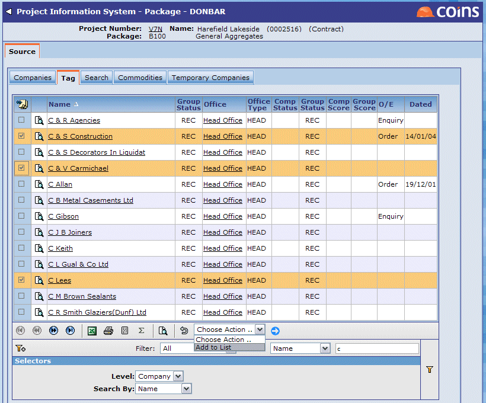

If you know the companies or offices you want to send to, you can select them directly from the Company Information System. When you have chosen the package you want to work with, the Companies tab displays the mailing list containing the offices you have selected. Initially, of course, this is blank.

The offices you selected now appear on the Companies tab.